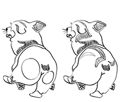

Hello, thank you for visiting my website! I am part designer, part illustrator from Seoul, Korea, but have lived in the UK, PA, NY, and now living in St. Louis. I am a current Senior in Communication Design with a minor in Marketing at Washington University in St. Louis.My interests lie in interaction design because the idea of guiding my audience through a single experience or a series of experiences I have created (whether it be on a screen or physical) excites me. I also enjoy animating on screen because I love creating movement, which is something that resonates with me.
I love dried fruits and corgi butts.